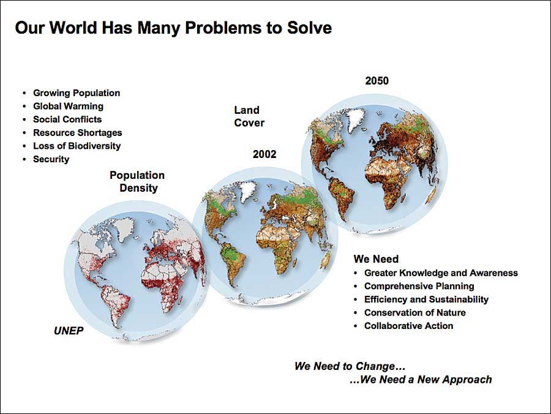

The problem is created where we have no idea how to implement & use in the practical life.
Todays's concern is about awareness of GIS.
GIS is all about earth, changes & its activities.
Remote Sensing (RS) helps in analyzing the earth & avoiding ground survey.
Every big companies first prefer to analyze the upcoming projects by its ground truthing but
RS made it easy through satellite.
GIS creates the right of way before implementing the project &
after completing the project or during the process that helps in investigating it time to time without
ground-truthing. This awareness can be spread in Karachi through
ISST.
Schedule for conference
Start by 8 am
After recitation, Welcome speech
Some speakers regarding awareness of GIS
Hi Tea by 1 pm
Thanks speech by Director at 2 pm
Its importance is best described as followed:

GIS Products
ArcGIS is a comprehensive suite of mapping and location intelligence tools and capabilities. ArcGIS can be
deployed on local machines (ArcGIS Pro), on your remote or on-premises servers (ArcGIS Enterprise), or as
SaaS hosted by Esri (ArcGIS Online). ArcGIS includes focused apps to deliver complete solutions for your
business or organization. Along with software, Esri provides a comprehensive collection of data and content
to geo-enrich your own data. ArcGIS also provides rich software development tools for you to configure and
create your own mapping and location intelligence products.
Get advanced business tools in addition to all the easy-to-use features and imagery of Google Earth.
BatchGeo is the easiest way to get your list of addresses on a map. Since 2006 BatchGeo has hosted millions
of maps for Fortune 50 companies, non-profits, and individuals. The idea behind BatchGeo is most geographic
data is stored in some sort of spreadsheet, list, or simple table (ex: Excel, CSV, Google Spreadsheets,
etc.) So its optimized for those formats, making it super easy to drag in or copy/paste your tabular data
into a map. Once your data is mapped the real fun begins. Your data points are spread out on an easy to
navigate Google Map. Data can be color coded by groups or ranges, or even heat mapped. If routing is what
you are interested in, BatchGeo can give you optimized routes for up to 23 points at a time. This ensures
you don't waste time when visiting your customers. Finally, if you want to share your map it's easy to do.
You can choose if your map is to be secured (password protected) or generally available to the public.
BatchGeo can even be used for a store locator for your website.
Google Maps API is a mapping platform that includes driving directions, Street View imagery and others.
Connect people, locations, and data using interactive maps created with ArcGIS Online. Quickly create maps
by dropping in your spreadsheet and mashing it up with other location data included in ArcGIS Online. Apply
Smart Mapping styles to make your data visually stunning and use intuitive analysis tools to deliver
location intelligence. Add valuable context to your data by combining it with Esri’s demographic and
lifestyle data. Work collaboratively with your colleagues to build maps and apps. Instantly share your maps
and apps with anyone, anywhere. Thousands of organizations and millions of users have proven ArcGIS Online
to be a scalable and secure software-as-a-service hosted by Esri.
Those packages are shown below :
Esri ArcGIS
Google Earth Pro
BatchGeo
Google Maps API
Maptitude
These images can be found at one place i.e. here & all products can
be described as "Data Capture", "Data Visualization", "Ease of Use", and "Data
Storage" are the top four factors that positively impact user satisfaction for GIS products. These factors are
determined by an algorithm that selects the attributes that are most likely to predict user satisfaction within
this category. To be part of this amazing & emerging world, get yourself registered using form or contact at
ahtasham.tanver@yahoo.com for any query.